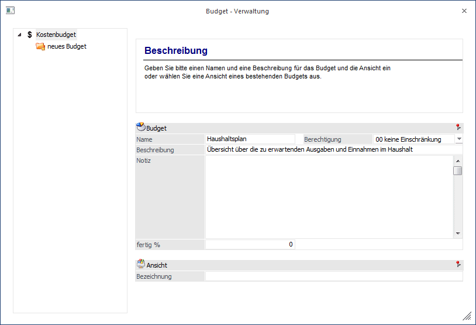
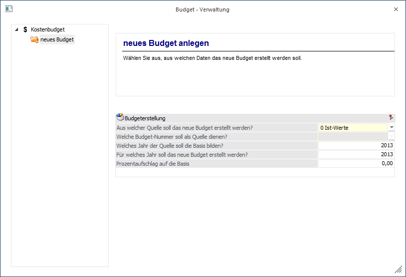
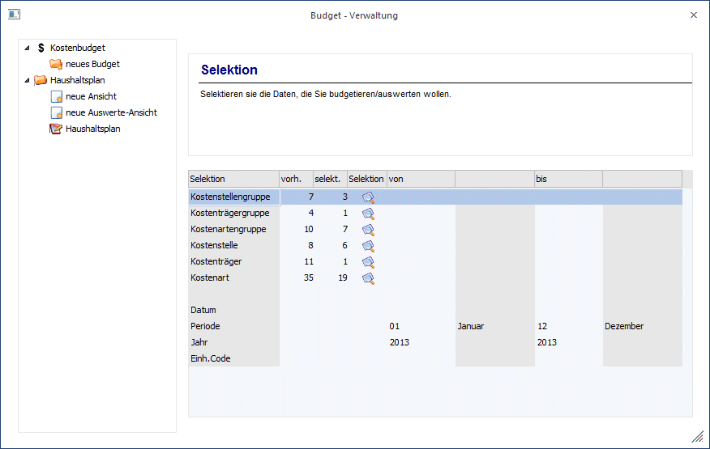
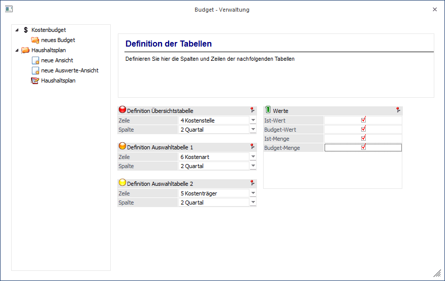
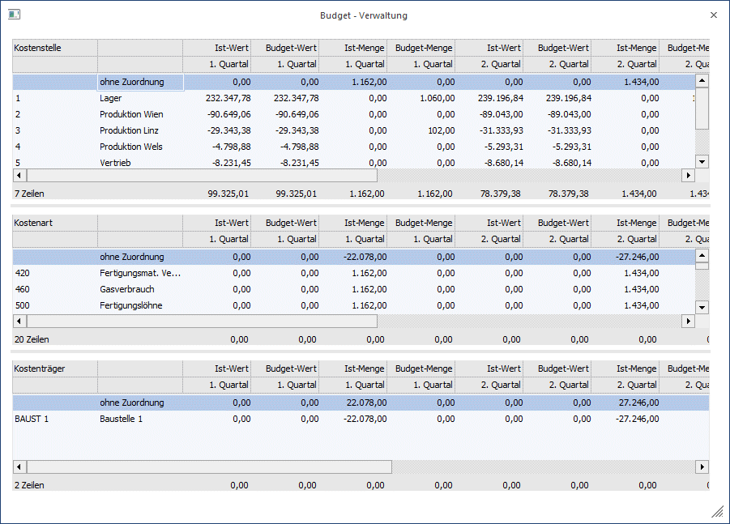
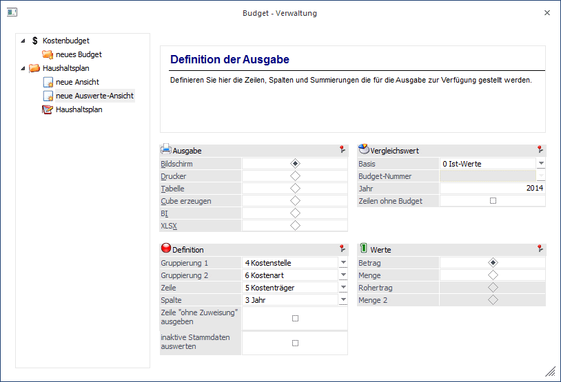
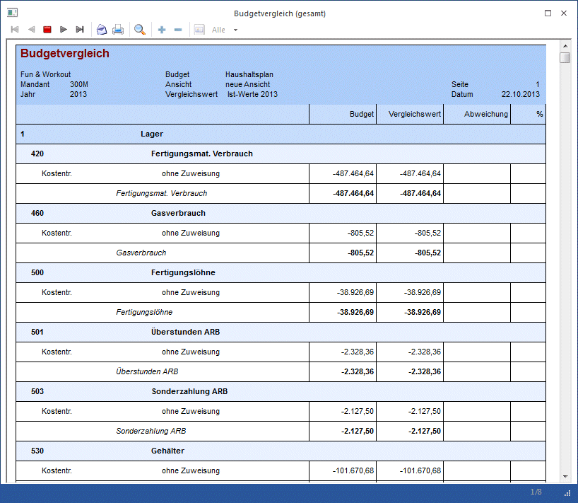
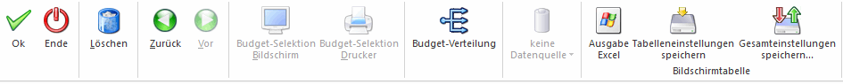

Über die Budget-Verwaltung können beliebig viele Budgetansätze - z.B. auf Basis von Ist-Werten des Vorjahres oder bereits bestehender Budgets - erstellt werden. Innerhalb eines Budgets kann wiederum anhand von Budget-Ansicht eine "Feinbudgetierung" vorgenommen werden. Somit können Sie zum Beispiel eine Ansicht für die Vertriebsabteilung erstellen, in der nur die für diese Abteilung relevanten Kostenstellen und Kostenarten angezeigt werden, eine weitere Ansicht, die für die Budgetierung der geplanten Erlöse verwendet wird und eine weitere Ansicht, in der sämtliche Kosten und Erlöse budgetiert werden können. In jeder dieser Ansichten können Werte erfasst werden - die Änderungen werden immer in das zu Grunde liegende Budget zurück geschrieben.
Budgets können in den Applikationen Kostenrechnung, Finanzbuchhaltung und Fakturierung für die jeweiligen Bereiche erstellt/verwaltet werden.
Die Budget-Verwaltung ist in den Applikationen FIBU, FAKT und KORE über den Menüpunkt
1 Stammdaten
1 Budget
1 Budget - Verwaltung
aufrufbar.
In KORE und FIBU steht zusätzlich der Schnellaufruf
1 STRG + T
zur Verfügung.
Hinweis 1
Beim Budget der FIBU werden bei den IST-Werten der Personenkonten die Netto-Umsätze herangezogen und diese ggf. als Budget übernommen. Bei den Sachkonten werden die Salden verwendet.

Ø neues Budget
Durch Anwählen dieses Eintrages in der Baumstruktur kann ein neues Budget erstellt werden.
Ø neue Ansicht
Über diesen Button erstellen Sie eine neue Ansicht für ein bestehendes Budget. In einer Ansicht kann auf beliebige Stammdatenbereiche eingeschränkt und budgetiert werden.
Ø neue Auswerte-Ansicht
Zu einem Budget können Auswerte-Ansichten erstellt werden. Die Strukturierung der Auswertung kann frei gewählt werden.
Ø Name
Unter dem hier eingegebenen Namen wird das Budget gespeichert und in der Baumstruktur angezeigt. 50 Stellen, alphanumerisch.
Ø Beschreibung
Hier kann eine zusätzliche Beschreibung des Budgets eingetragen werden.
Ø Berechtigung
Über die Berechtigungsprofile (einzustellen im WinLine ADMIN) kann hier festgelegt werden welche Benutzergruppen Zugriff auf das ausgewählte Budget haben.
Hinweis 2
Benutzern des Typs "Administrator" oder mit der Administratorenberechtigung "Benutzeradministrator" steht in der Auswahlbox der Punkt ">> Neues Profil" zur Verfügung. Über die Anwahl dieses Eintrags kann in der Folge ein neues Berechtigungsprofil angelegt werden.
Ø Notiz
Im Feld "Notiz" können weitere Informationen zum Budget erfasst werden.
Ø fertig %
Dieses Feld dient zur Information, wie weit die Budgetierung abgeschlossen ist. Es handelt sich hier um ein reines Info-Feld, in dem der Benutzer einen beliebigen Prozentwert eintragen kann.
Ø Ansicht
Eingabe einer Bezeichnung für die Budget-Ansicht. Bei der
Neuanlage eines Budgets muss auch gleichzeitig eine Ansicht erstellt werden,
damit die Budgetwerte errechnet werden können.
Pro Budget (Budgetnummer)
können beliebig viele Ansichten definiert werden - z.B. Kostenstelle nach
Kostenart; Kostenart nach Kostenstelle, Kostenträger nach Kostenart,
Kostenträger nach Kostenstelle, usw.
Schritt "neues Budget anlegen"
In diesem Schritt wird festgelegt, auf Basis welcher Werte das Budget für ein bestimmtes Jahr errechnet werden soll. Möglich ist die Verwendung von Ist-Werten oder ein anderes, bereits vorhandenes Budget. Über das Feld "Prozentaufschlag" kann auf die Basis-Werte noch ein Prozentsatz aufgeschlagen werden. In diesem Schritt erfolgt also eine "Grobplanung", in der sämtliche Stammdaten, die Werte in dem gewählten Quelljahr eingetragen haben, mit einem neuen Budgetwert versehen werden. Die "Feinplanung" kann im Anschluss in den Budget-Ansichten erfolgen.

Ø Aus welcher Quelle soll das neue Budget erstellt werden?
Zur Auswahl stehen in diesem Drop-Down Feld "Ist-Werte" und - wenn bereits mindestens ein Budget angelegt wurde - "Budget-Werte" oder auch "leeres Budget" zur Verfügung.
Ø Welche Budget-Nummer soll als Quelle dienen?
Dieses Feld wird aktiviert, wenn als Quelle "Budget-Werte" ausgewählt wurden. So kann ein vorhandenes Budget als Basis für die neue Budgetberechnung verwendet werden.
Ø Welches Jahr der Quelle soll die Basis bilden?
Hierüber wird angegeben, welches Jahr die Grundlage des neuen Budget werden soll.
Ø Für welches Jahr soll das neue Budget erstellt werden?
Hier kann ein bereits vorhandenes Wirtschaftsjahr oder auch ein neues Wirtschaftsjahr angegeben werden. Somit ist es möglich, bereits vor dem Jahreswechsel ein Budget für das neue Jahr anzulegen und zu verwalten.
Ø Prozentaufschlag auf die Basis
Wird dieses Feld auf 0,00 gelassen werden die Ist- bzw. Budget-Werte, die als Quelle dienen, 1:1 ins neue Budget übernommen. Sobald ein Prozentsatz eingetragen ist, werden die Basis-Werte um diesen erhöht bzw. verringert (wenn ein negativer Prozentsatz eingetragen wird) und das Ergebnis ins neue Budget geschrieben.
Schritt "Selektion"
Im Schritt Selektion wird festgelegt, welche Stammdaten- und Datumsbereiche in der Budgetansicht angezeigt und in weiterer Folge genauer budgetiert werden sollen.
Je nachdem welcher Bereich budgetiert bzw. ausgewertet werden soll, stehen unterschiedliche Selektionskriterien zur Verfügung:

Ø 
Über diesen Button wird eine Selektionsmaske aufgerufen, mit der einzelne Kostenstellen, Sachkonten, Personenkonten, Artikel (je nach Applikation) ausgewählt werden können. Weitere Informationen entnehmen Sie bitte dem Kapitel Budget - Selektion.
Schritt "Definition der Tabellen"
In diesem Schritt kann definiert werden wie die Auswertungs-/Budgetierungs-Ansicht gegliedert werden soll. Folgende Stammdatenbereiche stehen pro Zeile, je nachdem um welchen Budgetbereich es sich handelt, zur Auswahl:
Ø FAKT-Budget:
ü 1) Artikelgruppe
ü 2) Artikeluntergruppe
ü 3) Artikelnummer
ü 4) Kundengruppe
ü 5) Kontonummer
ü 6) Projektnummer
ü 7) Vertreternummer
Ø FIBU-Budget:
ü 1) BKZ1
ü 2) BKZ1
ü 3) BKZ3
ü 4) BWA1
ü 5) BWA2
ü 6) BWA3
Ø KORE-Budget:
ü 1) Kostenstellengruppe
ü 2) Kostenträgergruppe
ü 3) Kostenartengruppe
ü 4) Kostenstelle
ü 5) Kostenträger
ü 6) Kostenart

Dadurch ergeben sich nahezu jede beliebige Kombinationsmöglichkeit, wie z.B.: Kostenstelle nach Kostenart; Kostenart nach Kostenstelle, Kostenträger nach Kostenart und Kostenstelle, Kostenstellengruppe nach Kostenstelle und Kostenträger, Artikelgruppe mit Unterteilung der Artikel, Artikel mit Unterteilung nach Kontonummer, usw.
Ø Spalte
Hier kann der gewünschte Spaltenwert ausgewählt werden. Für die Auswertung stehen die Spalten "Periode", "Quartal", "Jahr" und "Summe" zur Verfügung.
Ø Werte
Durch Aktivieren der Optionen kann selektiert werden, welche Werte in der Budgettabelle angezeigt werden. Die Ist-Wert und Ist-Menge beziehen sich immer auf das Jahr, für welches das Budget angelegt wird.
Schritt "Budget"
In diesen Tabellen werden nun die errechneten, bzw. bereits erfassten Budget- und Istwerte angezeigt. Die 3 Tabellen (bzw. 2 Tabellen im FIBU-Budget) sind zusammenhängend - das heißt, wenn z.B. wie im Beispiel unten eine Ansicht nach Kostenstelle/Kostenart/Kostenträger definiert wurde und in die Kostenstelle 2 markiert wird, werden in der Kostenartentabelle die Werte angezeigt, die für die jeweilige Kostenart mit der selektierten Kostenstelle erfasst wurden.
Direkt in den einzelnen Budget-Tabellen können neue Zeilen (für z.B. eine neue und zuvor nicht selektierte Kostenstelle) erfasst werden, indem in die nächste leere Zeile geklickt wird. Für die Eingabe der neuen Nummer (Kostenstelle, Kostenart etc.) steht der Matchcode zur Verfügung.

Damit ergibt sich die Möglichkeit, innerhalb einer Budgetansicht sowohl "Top-Down" als auch "Bottom-Up" zu budgetieren.
Beispiel Top-Down
Wird bei einer Budgettabelle, die nach Kostenstelle/Kostenart
der Budgetwert für die Kostenstelle 1 in der Spalte Januar geändert, so wird
dieser Betrag aliquot auf die Kostenart aufgeteilt - also auf Basis der bereits
vorhandenen Werte der einzelnen Kostenarten.
Bsp.: Budget der Kostenstelle 1:
-3000,- - davon wurden -2000,- mit der Kostenart 470 und -1000,- mit der
Kostenart 460 erfasst. Wird nun in der Kostenstellentabelle dieser Wert auf
-6000,- erhöht, so erhält die Kostenart 470 -4000,- und die Kostenart 460
-2000,-
Beispiel Bottom-Up
Wird in einer Budgettabelle nach Kostenstelle/Kostenart direkt eine Kostenart budgetiert, so wird dieser Budgetwert nur der direkt übergeordneten (also die in der 1. Tabelle zuvor selektierten) Kostenstellen zugewiesen.
Hinweis
Die Zeilen "ohne Zuordnung" enthalten die Werte (z.B. Ist-Werte), die durch die Budget-Selektion keiner Kostenstelle, Kostenart, Kostenträger etc. zugewiesen wurden. Diese Zeilen können nicht budgetiert werden.
Erstellung einer Auswerte-Ansicht - Schritt "Definition der Ausgabe"
Zu einem Budget können verschiedene Auswerte-Ansichten erstellt werden. Diese dienen der Auswertung der Budget-Ansichten. Die Strukturierung der Auswertung kann frei gewählt werden. Die Selektion kann nach denselben Datenbereichen erfolgen, wie bei einer "normalen" Ansicht. Das heißt, die ersten beiden Schritte gleichen denen einer Neuanlage einer Ansicht. Im Schritt "Definition der Ausgabe" wird festgelegt, wie die Auswertung strukturiert werden soll.

Ø Definition der Ausgabe
Die ersten beiden Schritte gleichen denen einer Neuanlage einer Ansicht. Im Schritt "Definition der Ausgabe" legen Sie fest, wie die Auswertung strukturiert werden soll.
Ø Definition
Nach folgenden Stammdatensätzen - abhängig davon wofür das Budget erstellt werden soll - kann in der Auswertung gruppiert werden:
Ø FAKT-Budget:
ü 1) Artikelgruppe
ü 2) Artikeluntergruppe
ü 3) Artikelnummer
ü 4) Kundengruppe
ü 5) Projektnummer
ü 6) Vertreternummer
ü 0) <KEINE>
Ø FIBU-Budget:
ü 1) BKZ1
ü 2) BKZ1
ü 3) BKZ3
ü 4) BWA1
ü 5) BWA2
ü 6) BWA3
Ø KORE-Budget:
ü 1) Kostenstellengruppe
ü 2) Kostenträgergruppe
ü 3) Kostenartengruppe
ü 4) Kostenstelle
ü 5) Kostenträger
ü 6) Kostenart
Weiters kann festgelegt werden welche Werte in der Zeile, und welche Werte in der Spalte angezeigt werden sollen.
Ø Zeilen ohne Zuweisung ausgeben
Wahlweise können die Zeilen ohne Zuweisung mit ausgegeben werden.
Ø Inaktive Stammdaten auswerten
Sind Stammdaten der Gruppierung inaktiv, können diese durch Aktivierung der Checkbox mit ausgewertet werden.
Ø Ausgabe
Die Auswertung kann wie üblich auf den Bildschirm oder den Drucker ausgegeben werden. Zusätzlich steht noch die Ausgabe als Tabelle zur Verfügung, über die Sie die Werte an Excel übergeben können. Auch die Ausgabe als Cube oder nach Excel Pivot oder in eine XLSX-Datei ist möglich.
Ø Werte
Hier erfolgt die Selektion, ob die budgetierten Werte oder Mengen (Kostenrechnungsbudget) bzw. Roherträge (FAKT-Budget) ausgewertet werden sollen.

Buttons

Ø OK
Durch Drücken dieses Buttons kann ein neu erfasstes Budget gespeichert, eine neue Ansicht bzw. Auswerte-Ansicht gespeichert werden.
Ø Ende
Mit dem Ende-Button wird der Menüpunkt geschlossen.
Ø Löschen
Mit dem Löschen-Button können erstellte Budgets, bzw. Ansichten wieder gelöscht werden.
Ø Zurück / Vor
Über diese Buttons kann zwischen den einzelnen Schritten gewechselt werden.
Ø Budget-Selektion Bildschirm / Drucker
Über diesen Button können Sie entscheiden, ob Sie sich das Ergebnis der Budget-Selektion am Bildschirm oder am Drucker ausgeben lassen möchten.
Ø Budget-Verteilung
Sobald ein Wert in ein Feld eingetragen wird, in dem noch kein Budget-Wert erfasst wurde, wird das Fenster "Budget-Verteilung" automatisch geöffnet. Die Budget-Verteilung kann auch über diesen Button "Verteilen" geöffnet werden. Voraussetzung ist, dass der Cursor in einem Budget-Werte-Feld steht und dort ein Wert eingetragen wird.
Ø Datenquelle
Mit Hilfe dieser Auswahl kann definiert werden, ob und wie eine Datenquelle (d.h. ein Snapshot oder eine MasterView) verwendet werden soll.
ü Keine Datenquelle
Bei Auswahl
von "keine Datenquelle" wird keine zuvor angelegte Datenquelle genutzt. D.h. die
Daten werden von der WinLine "live" ermittelt und in der gewünschten Form
ausgegeben.
Hinweis
Da die BI-Ausgabe (z.B. Cube oder Power Report) immer eine Datenquelle benötigt, wird im Hintergrund eine temporäre Datenquelle (Snapshot) gebildet.
ü Datenquelle
erstellen/aktualisieren
Die Daten werden zur Laufzeit ermittelt und an einen
zu definierenden Snapshot übergeben. Nach dem Füllen der Datenquelle wird die
gewünschte Ausgabevariante über die Datenquelle erzeugt. Dieser Vorgang kann mit
einer Zeitverzögerung verbunden sein, da die Daten zusätzlich gespeichert werden
müssen.
ü Datenquelle verwenden
Bei der
Verwendung eines Snapshots werden die Daten direkt aus der Datenquelle gelesen,
d.h. die für die Ausgabe benötigten Daten können ohne Verzögerung in der
gewünschten Variante ausgegeben werden.
Wird hingegen eine MasterView
gewählt, so werden die Daten für die Ausgabe "live" ermittelt, wobei diese so
aktuell sind wie die zugrunde liegenden Datenquellen.
Hinweis
Der Button "Datenquelle verwenden" wird nur angeboten, wenn für diesen Bereich (bezogen auf den aktuellen Benutzer / Mandanten) zumindest eine private oder öffentliche Datenquelle existiert. Des Weiteren stehen nur die Ausgabevarianten "Power Report", "Cube erzeugen", "Excel Pivot" und "Ausgabe XLSX" zur Verfügung.
Hinweis
Weitere Informationen zum Thema "Datenquellen" entnehmen Sie bitte dem Kapitel "Die Datenquelle".
Ø Tabelleneinstellungen speichern
Die Spalten einer Tabelle können grundsätzlich an beliebige Positionen verschoben, bzw. in der Breite entsprechend angepasst werden. Durch Anwahl des Buttons "Tabelleneinstellungen speichern" werden die Einstellungen benutzerspezifisch gespeichert und bei dem nächsten Aufruf des Programmpunktes wieder vorgeschlagen.
Ø Gesamteinstellungen speichern
Im Gegensatz zu "Tabelleneinstellungen speichern" können mit "Gesamteinstellungen speichern" mehrere Tabellenaufbauten gespeichert und nach Wunsch geladen werden. Zusätzlich werden Sonderfunktionen der Tabelle (z.B. "Spalte gruppieren") ebenfalls bei der Speicherung bedacht.